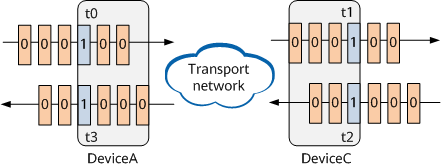

IFIT Measurement Indicators
A bearer network has network boundaries. Traffic enters and leaves the network through some edge devices. On the network shown in Figure 1, the number of packets entering the network from the inbound interface on an edge device is Pi, the packets are forwarded by an intermediate device, and the number of packets leaving the network from the outbound interface on another edge device is Pe.
IFIT supports packet loss and delay measurement, which is defined as follows:
- The difference between the number of packets entering the network and the number of packets leaving the network within a specified measurement interval is the number of lost packets.
- The difference between the time a service flow enters the network and the time the service flow leaves the network within a specified measurement interval is the delay.

The end-to-end measurement and hop-by-hop measurement differ only in measurement points. The packet loss and delay measurement fundamentals are the same. The following uses the end-to-end measurement as an example.
Packet Loss Measurement
Packet loss measurement allows you to obtain the number of lost packets and the packet loss rate based on the difference between the number of packets entering the network and the number of packets leaving the network within a measurement interval. On the network shown in Figure 1, a measurement flow enters the network from DeviceA and leaves the network from DeviceC. Figure 2 shows how packet loss measurement is performed on each device from the time when packets enter the network to the time when the packets leave the network within a period of time.
For service packets in two consecutive measurement intervals, the packet loss color bits are set to 0 and 1, respectively. Each device has two counters to count the numbers of packets with color bits 0 and 1, respectively. The following uses a measurement interval (T2) in which the packet loss color bit is set to 1 as an example to describe how packet loss measurement is performed. (Packet loss measurement is performed in the same way in measurement intervals in which the packet loss color bit is set to 0.)
- t0: DeviceA sets the color bit in incoming service packets to 1, and starts a counter to count the number of service packets with color bit 1 received within this measurement interval.
- t1: On the basis of device clock synchronization on the network, when the outbound interface of DeviceC receives the first service packet carrying a flow ID within this measurement interval, a measurement instance is generated, and DeviceC starts a counter to count the number of service packets with color bit 1 received within this measurement interval.
- t2/t3: To prevent an inaccurate measurement result caused by network delay and out-of-order packets, DeviceA/DeviceC reads the number of packets with color bit 0 within the last measurement interval and the current measurement interval (T1 + X x T2 in the preceding figure) at time X (ranging from 1/3 to 2/3) of the current measurement interval, clears the number, and reports the measurement result to the controller.
- t4/t5: The inbound interface of DeviceA and the outbound interface of DeviceC complete counting the number of service packets with color bit 1 received within this measurement interval.
- t6/t7: The number of packets with color bit 1 on DeviceA and that on DeviceC are Pi and Pe, respectively. (The counting method is the same as that at t2/t3.)
The number of lost packets within this measurement interval is calculated using LostPacket = Pi - Pe.
Delay Measurement
Delay measurement allows you to obtain the forwarding delay between two specified network nodes based on the difference between the time a service flow enters the network and the time it leaves the network within a measurement interval.
On the network shown in Figure 1, the packet forwarding delay is obtained by comparing the time DeviceA sends a service flow, the time DeviceC receives the service flow, the time DeviceC sends a return flow, and the time DeviceA receives the return flow. Figure 3 shows how delay measurement is implemented from the time DeviceA sends packets to the time DeviceC receives the packets.

- t0: DeviceA sets the color bit in incoming service packets to 1, and the counter records the packet sending timestamp t0.
- t1: The outbound interface of DeviceC receives the first service packet with color bit 1 within this measurement interval, and the counter records the packet receiving timestamp t1.
- t2: DeviceC sets the color bit in return packets to 1, and the counter records the packet sending timestamp t2.
- t3: The outbound interface of DeviceA receives the first return packet with color bit 1 within this measurement interval, and the counter records the packet receiving timestamp t3.
The one-way delays in the two directions within this measurement interval are calculated using the following formulas:
- 1d (DeviceA -> DeviceC) = t1 – t0
- 1d (DeviceC -> DeviceA) = t3 – t2
The two-way delay is calculated using 2d = (t1 – t0) + (t3 – t2) = (t3 – t0) – (t2 – t1).